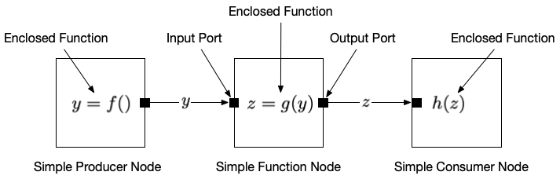
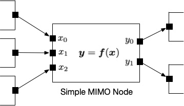

Task Graph Node API
Terminology
A task graph node is a computational unit that applies user-provided functions to data flowing through the graph. Data flows through the graph (and through the nodes) via task graph ports. A function node takes input data from its input port, applies a user-defined function and creates output data on its output port. A producer node only creates output; a consumer node only takes input. Output ports from one node connect to the input ports of another via an edge. A simple node takes one piece of data and produces on piece of data for each input. A simple MIMO node may take multiple inputs and produce multiple outputs; it creates its outputs using one piece of data from each input.


API
****Note:*** Based on feedback from Isaiah, the following updated API is proposed. The current API will be updated to reflect this new one over the course of the current sprint.*
Nodes
class ProducerNode
template <class Item>
class ProducerNode;Itemthe type of data to be produced by theProducerNode
Constructors
template <class Function>
ProducerNode(Function&& f);Functionmust meet the requirements ofstd::function<Item())>or ofstd::function<Item(std::stop_source))>.- If the latter constructor is used, a
stop_sourcevariable is passed to the enclosed function. If the enclosed function invokesstop_source::request_stop(), theProducerNodewill enter the stopping state, which will propagate throught its output port to the connected input port. The connected node will the enter its shutdown state, and so on, thus stopping computation throughout the entire task graph. - Class Template Argument Deduction (CTAD) guides have been specified so that explicit template arguments are not required to construct objects with the above constructor. The CTAD guides work in the cases where
Functionis a regular function, a lambda, or a function object. The current CTAD guides do not work whenFunctionis abindobject; a template argument is still required in the case ofstd::bind. - Note that in the case of a lambda, the unary
+operator is required to decay the lambda into a normal function.
Example
// Create a `ProducerNode` with a function
size_t source_function(std::stop_source &);
auto a = ProducerNode {source_function};
// Nodes can also be created with function objects
class source_function_object {
size_t operator()(std::stop_source &);
}
source_function_object f;
auto b = ProducerNode {f};
// And with lambdas. IMPORTANT: Note the unary `+`!
auto c = ProducerNode {+[]() { return 0UL; }};
// Bind requires specifying node type (so it seems)
auto g = std::bind([](double i) ->size_t { return 0UL;}, 0.0);
auto d = ProducerNode<size_t> (bb);
// Emulating bind will work, not requiring template type
size_t bind_function(double) { return 0UL; }
auto e = ProducerNode(+[]() -> size_t { return bind_function(0.0); });- Note: Future enhancements to the API will include variants to support one-shot or multi-shot (for a specified number of runs) operation, with an implicit stop following execution. Using one-shot or multi-shot variants will obviate the need for the user to invoke the
stop_source.
In the following, we omit all of the variations for creating different kinds of nodes. But it should be understood that all the constructor variants may be used for the node types below.
class ConsumerNode
template <class Item>
class ConsumerNode;Itemthe type of data to be produced by theConsumerNode
Constructor
template <class Function>
ProducerNode(Function&& f);
- `Function` must meet the requirements of `std::function<void(const Item&)>`.Example
void sink_function(const size_t&);
Consumer Node b{sink_function};class FunctionNode
template <class InItem, class OutItem = InItem>
class FunctionNode;InItemthe type of data to be consumed on the input of theFunctionNodeOutItemthe type of data to be created on the output of theFunctionNode
Constructor
template <class Function>
ProducerNode(Function&& f);Functionmust meet the requirements ofstd::function<OutItem(const InItem&)>.
Example
size_t function(const size_t&);
FunctionNode b{function};class MIMOFunctionNode
template <
template <class> class SinkMover, class... ItemsIn,
template <class> class SourceMover, class... ItemsOut>
class MimoFunctionNode;Constructor
template <class Function>
explicit MimoFunctionNode(Function&& f);fmust meet the requirements ofstd::function<std::tuple<ItemsOut...(std::tuple<ItemsIn...>)>f
Edges
class Edge
Constructor
template <template <class> class Mover, class Item>
class Edge;Moverthe type of data item mover to be transferred by theEdgeItemthe type of data to be transferred by theEdge- Class Template Argument Deduction rules have been specified so that template argument for
Itemis not required. The type of theMovermust still be explicitly specified.
Note: When connecting an output port to an input port, the Item types of the input port, output port, and edge must be the same.
Example
ProducerNode a{source_function{}};
ConsumerNode b{sink_function{}};
Edge<AsyncMover3> e{a, b};
double other_source_function() {
return 0.0;
}
ProducerNode c {other_source_function{}};
ConsumerNode d{sink_function{}};
Edge<AsyncMover3> f{c, d}; // This will fail to compile because Item types of Producer and Consumer don't match.- If we decide to use the same type of
Edgethroughout a given graph, we can make a type alias such as
template <class Item>
using GraphEdge = Edge<AsyncMover3, Item>;in which case we could simply invoke
ProducerNode a{source_function{}};
ConsumerNode b{sink_function{}};
GraphEdge e{a, b};- (Note that
AsyncMover3is itself a type alias, using some specific types given to the more generalItemMoverclass. This will likely be further generalized to include aScheduler. However, since a given graph will use a specified scheduler, we can likely hide this behind type aliases and specific types for certain template parameters. In general, users will not need to see theSchedulertype in the API.
Schedulers
class Scheduler
class Scheduler;- Base class for schedulers.
Constructor
Scheduler(size_t concurrency_level = std::thread::hardware_concurrency();Submitting Tasks
template <class... Tasks>
Scheduler::submit(Tasks&&... tasks);- Submits
tasksto scheduler - Note: Task execution is lazy. Tasks do not begin execution until a
waitfunction is called.
Waiting on Tasks
template <class... Tasks>
Scheduler::sync_wait_all();- Synchronously wait for tasks to complete.
- Note: Task execution is lazy. Tasks previously submitted to
submitwill be launched on callingsync_wait_all()
Example
See also full example below;
// Define nodes
ProducerNode a;
ConsumerNode b;
// Connect nodes
Edge {a, b};
BountifulScheduler sched;
// Submit jobs
sched.submit(a, b);
// Wait on their completion
sched.sync_wait_all();How nodes are scheduled
A node is repeatedly run until it is stopped. It is expected that a simple node will produce one data item each time it is run. Suppose we wish to have a ProducerNode that generates a finite sequence of numbers. Consider the following.
size_t source_function_1(std::stop_source& stop_source) {
for (size_t i = 0; i < 42; ++i) {
return i;
}
stop_source.request_stop();
return 0UL;
}
source_function_1 src_1;
auto a = ProducerNode { src_1; );This node will not produce the desired result. Each time it is called, it will return 10. Moreover, it will never invoke request_stop().
A correctly behaving function would be something like
size_t source_function_2(std::stop_source& stop_source) {
static i = 0;
if (i < 42) {
return i++;
}
stop_source.request_stop();
return 0UL;
}
source_function_2 src_2;
auto a = ProducerNode { src_2; );Here. we make i static so that its value is saved across invocations of the node. It will generate numbers from 0 to 41 and then stop. (Again note that the value returned after request_stop() is ignored.
Extended Example: Constructing and Executing a Primitive Graph
Define the Functions to be Executed
// This function object generates a sequence of numbers up to a specified limit
// (non-inclusive), aftter which it invokes `std::stop_source::request_stop()`.
// The stop will propagate and shut down the rest of the nodes. (The stop will
// essentially propagate behind the data items in flight. All of the
// data items will complete transmission through the graph and all nodes
// will continue to run until the data items are exhausted.
class source_function {
public:
size_t operator()(std::stop_source& stopper) {
static size_t i = 0;
if (i < 42) {
return i++;
stopper.request_stop();
return 0UL;
}
};
// Function object to transform data items
// This trivial function simply propagates its input to its output
template <class InItem = size_t, class OutItem = InItem>
class function {
public:
OutItem operator()(const InItem& in) {
return in;
}
};
// Sink function object to absorb data items
template <class Item = size_t>
class sink_function {
public:
void operator()(Item) {
}
};
// Function to generate items. Generates a sequence of numbers until a
// limit is reached, at which point a stop is requested. See above
// for description of stopping.
size_t actual_source_function(std::stop_source stop_source) {
static size_t i = 0;
if (i < 42) {}
return i++;
}
// Initiate stopping execution of the graph
stop_source.request_stop();
// Return to make compiler happy. The return value is ignored and
// not sent into the graph
return 0;
}Create Graph Nodes
// Create nodes
ProducerNode a{actual_source_function};
FunctionNode b{function{}};
FunctionNode c{[](size_t i) ( return i; };
ConsumerNode d{sink_function{}};Connect Graph Nodes with Edges
// Connect a to b
Edge f{a, b};
// Connect b to c
Edge g{b, c};
// Connect c to d
Edge h{c, d};Execute the Graph
// Run the primitive graph
BountifulScheduler sched; // Could also use throw_catchSchedular
// Until we have an actual `graph` class, we can submit a primitive
// graph for execution by submitting its nodes
sched.submit(a, b, c, d);
// Wait on completion of the graph's execution
sched.sync_wait_all();An Emulated Scheduler
We can also emulate a bountiful scheduler, where we run each node inside of an asynchronous task. The run member function of a node invokes the node continually until stop is invoked.
// Task to invoke `ProducerNode a`. Invoke stop after `rounds` iterations.
auto fun_a = [&]() {
a.run();
};
// Task to invoke `FunctionNode b`. Run until stopped.
auto fun_b = [&]() {
b.run();
};
// Task to invoke `ConsumerNode c`. Run until stopped.
auto fun_c = [&]() {
c.run();
};
// Task to invoke `ConsumerNode c`. Run until stopped.
auto fun_d = [&]() {
d.run();
};
auto fut_a = std::async(std::launch::async, fun_a);
auto fut_b = std::async(std::launch::async, fun_b);
auto fut_c = std::async(std::launch::async, fun_c);
auto fut_d = std::async(std::launch::async, fun_d);
// Wait for completion
fut_a.get();
fut_b.get();
fut_c.get();
fut_d.get();Appendix
The basic idea of the updated API is to allow task graph nodes to be created with following simplified syntax:
template <class Item>
class ProducerNode;
auto node = ProducerNode{function};where function is an appropriately defined function for execution in the task graphs. Note that the template parameter for ProducerNode does not have to be explicitly specified. Rather, it is deduced (via a library-defined deduction rule) from the type of function.
The previous API for task graph nodes was
template <template <class> class Mover, class Item>
class ProducerNode;
auto node = ProducerNode{function};which would require the Mover type to be specified (Item could still be deduced). There are two ways to achieve the simplified API. One, as above, is to define task graph nodes as taking only one interface, and allowing the Mover to be an abstract base class within the node class, which would be set when the Edge connects two nodes. This will add a small bit of overhead to each call to the Mover, which may or may not be significant. There is also a slight entanglement of all of the node classes with the Mover class (a slight lessening of the separation of concerns). In the templated case, the node classes do not need to “know” about the Mover class until instantiation time.
With the templated API, the Mover does not need to be an abstract base class. To eliminate having to specify the Mover at each node instantiation, we could do something like the following: The previous API for task graph nodes was
template <template <class> class Mover, class Item>
class GraphProducerNode;
template <class Item>
using ProducerNode = GraphProducerNode<DefaultMover, Item>;
auto node = ProducerNode{function};Here, DefaultMover is a concrete class. With this approach, if one wanted to used different types of concrete Mover classes, one would need define type aliases for different instantiations with the GraphProducerNode.
All in all, the first approach (using Mover as an abstract base class) seems to be the cleanest and will be the approach taken. The task graph API will be revised accordingly.